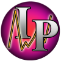

Doug Dellolio: Investor PAL

Investor PAL is a stock market program that aims to analyze trends in press releases and tweets to determine the movement of a stock. Currently there are many other applications that aim to predict stock price movement, however most use complex mathematical approaches that are not always accurate. The goal is to create a simple interface that an average user can use while giving them useful investment advice. The application will determine the sector of a stock based on it's press releases using training data and will also extract the most significant terms for the company. This data along with sentiment scores from tweets and select sentences will be used to create a prediction for future releases. Although nobody can 100% predict the market, there is data available that can be used to make better decisions. A few of the libraries used include StanfordCoreNLP, Yahoo Finance API, and Lingpipe.
Bio: I am currently a senior at the George Washington University majoring in Computer Science with a concentration in Software Engineering and Application Development. I am from Westchester, New York and I am an identical twin. My interests include investing and trading the stock market, playing guitar, and programming. I am particularly interested in technology and finance and how the two intersect.
Documentation:
